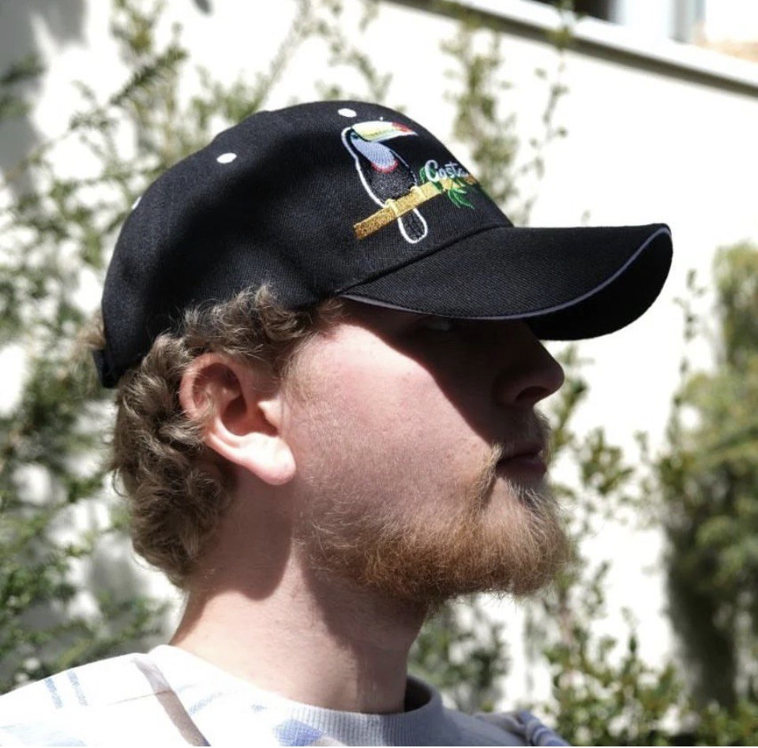

Welcome, my name is Baptiste Zigmann (20) and I’m a computer science student at the Institut of technologie in Karlsruhe (KIT).
I’m French and German, my language knowledge at a native or good level is: French, German and English.
I graduated highschool in France at the age of 18 at the CIV (Centre international de valbonne) where I got the opportunity to get my Baccalauréat (French graduation) and my Abitur (German graduation) thanks to the OIB program.
Since then I have been trying to be the most active possible in skill and knowledge acquirement throughout internships or self thought.
Please visit my other website sections for more information.
Personal Projects